Labyrinth, House of Anetta - Grotesque Cuttings
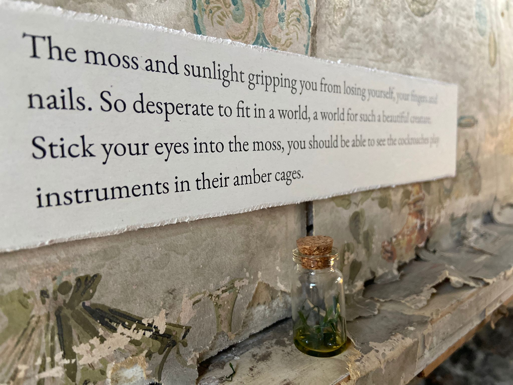
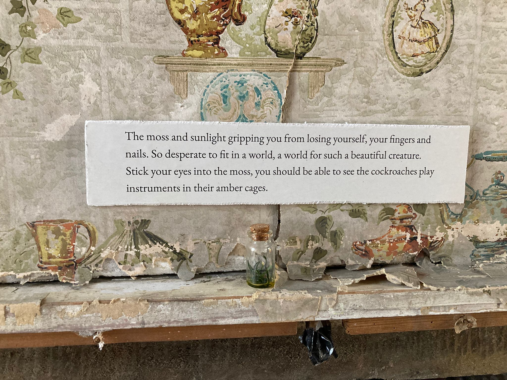
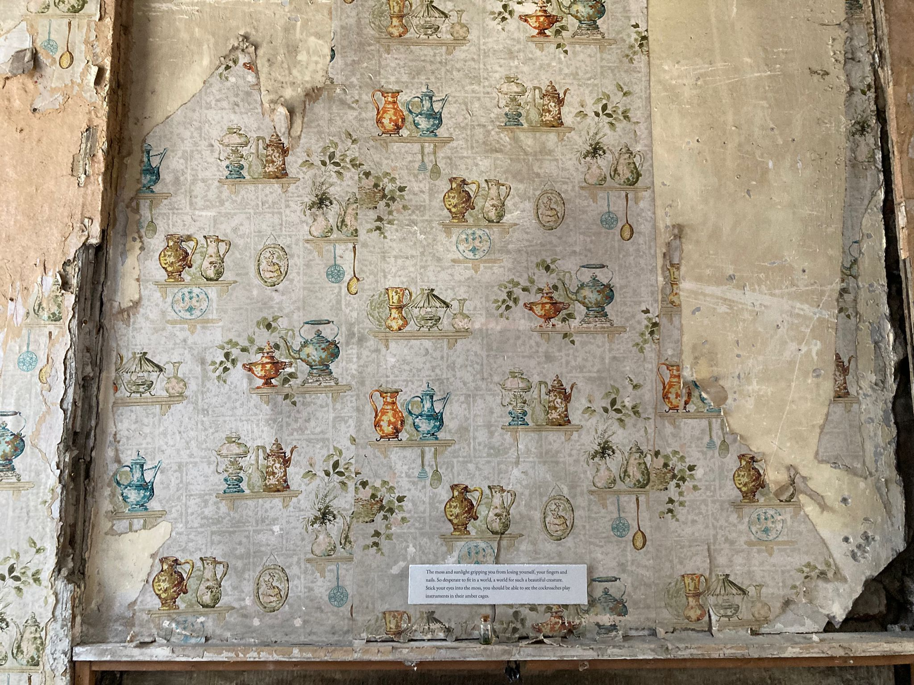
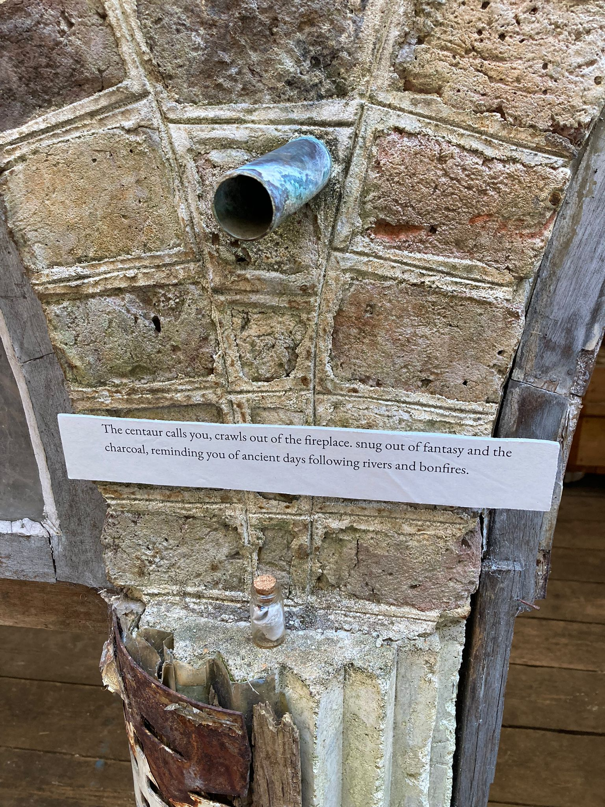
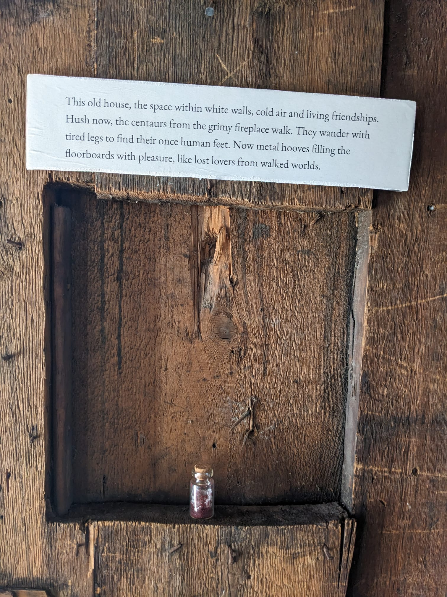
Labyrinth, group exhibition at House of Annetta - curated by Charlotte Young and Jade Zaheer
Grotesque Cuttings is a collaboration between myself and Lizzi Tingle, bringing their poetic narrative to life with strange scent vials, scattered throughout the house.
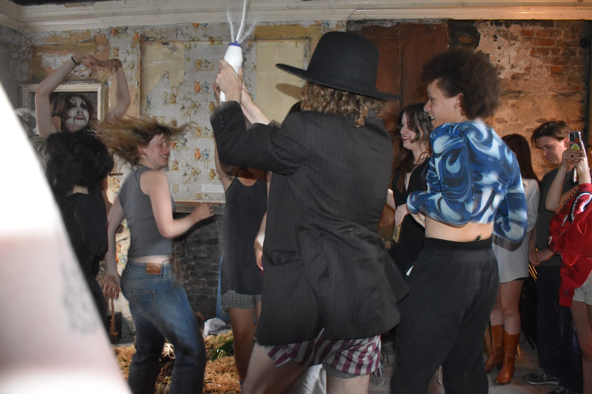
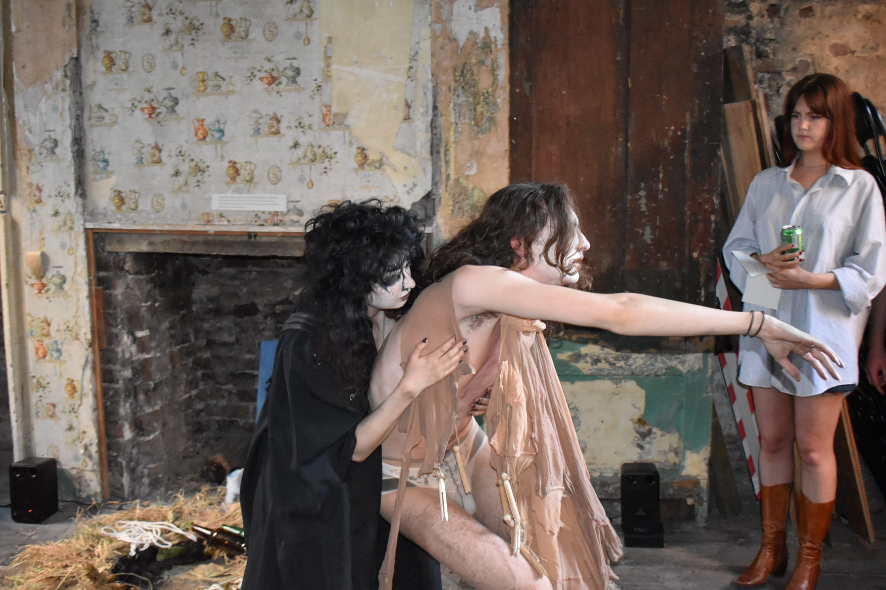
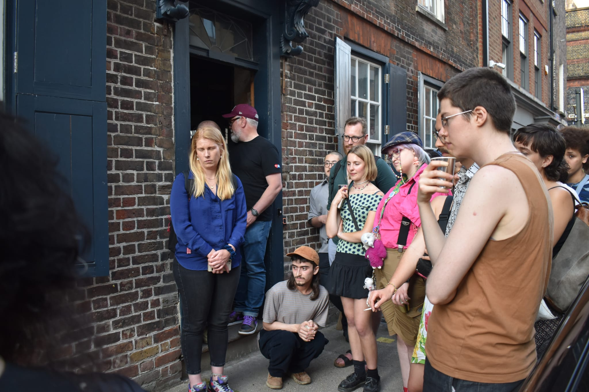
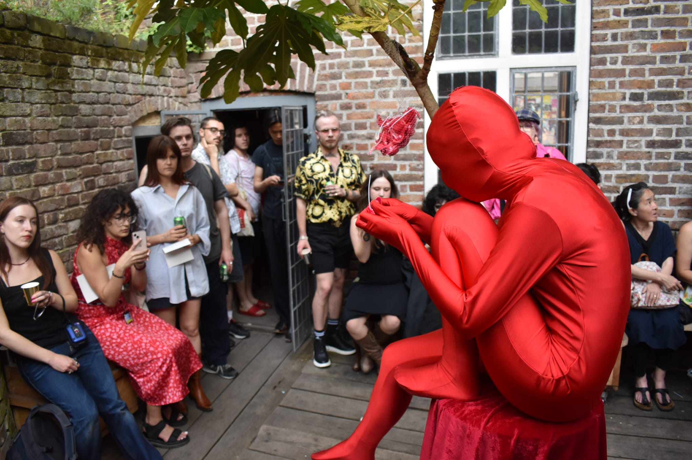
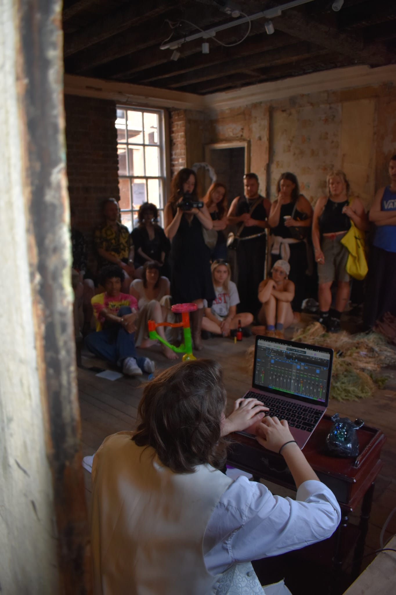
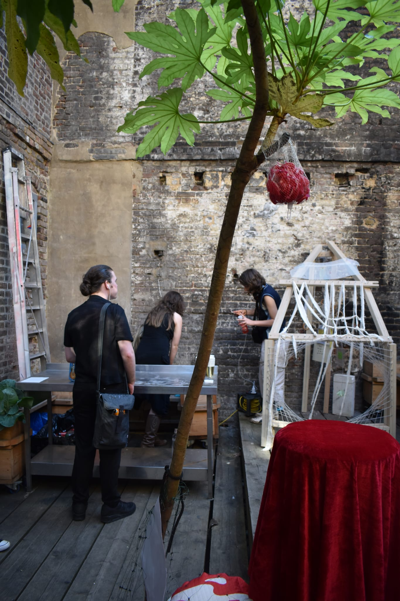
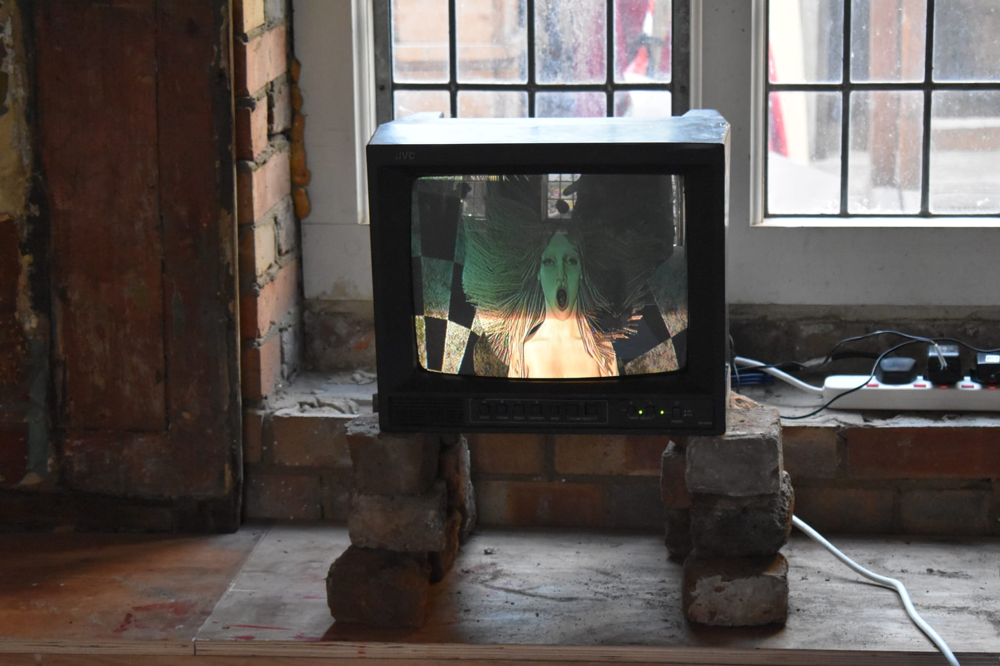
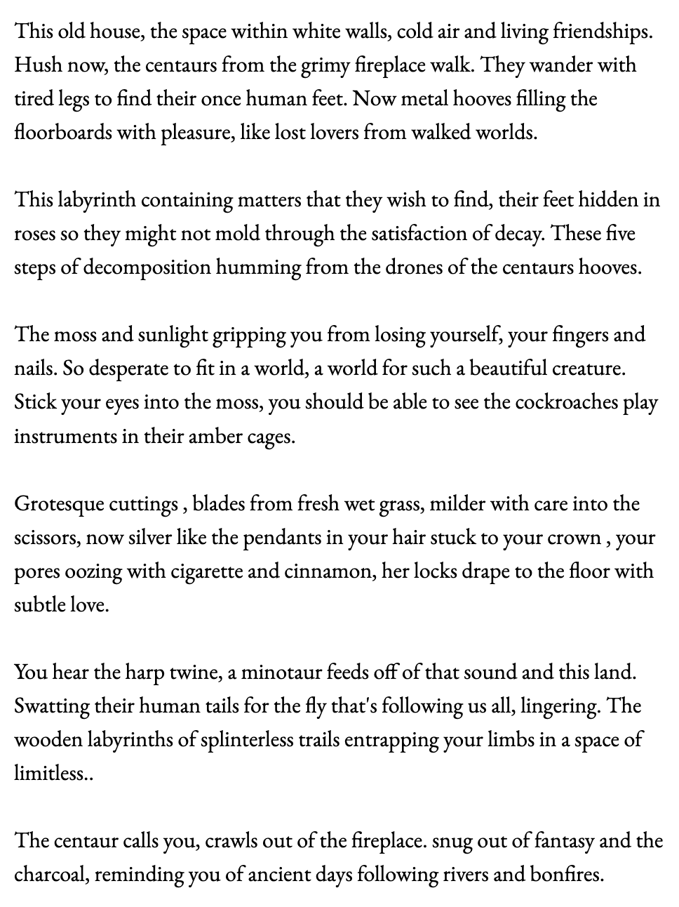